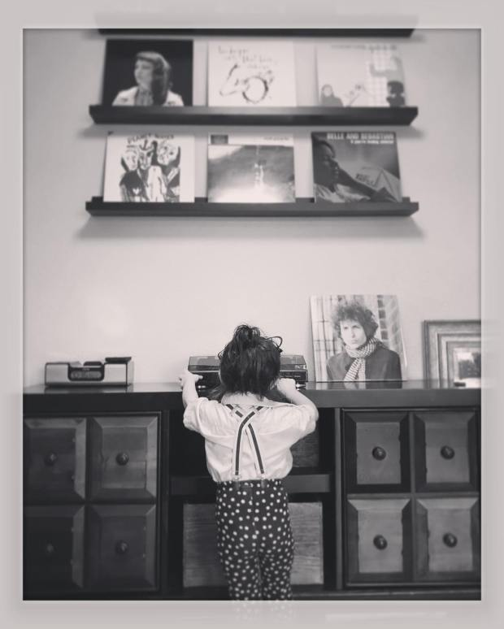

About
How it all got started.

Argos Media & Entertainment™ was launched in January of 2013 under the name DyskoPate Records™. DyskoPate Records™ was a compilation of several blogs, from LiveJournal and Last.fm to MySpace and Wordpress, which held all of my music reviews and reflections. The name was derived from modified family surnames. The updated logo, which has been in use since 2013, was adapted from a photograph of Argos, my border collie. Argos passed away on May 10, 2020.
On August 1, 2021, DyskoPate Records™ became Argos Media & Entertainment™.